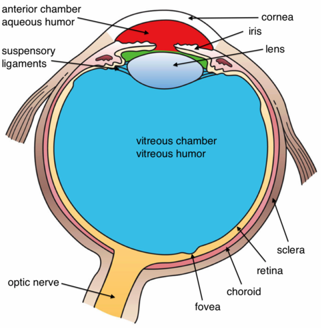
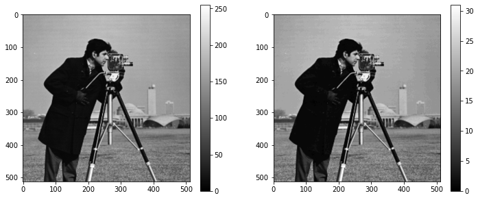
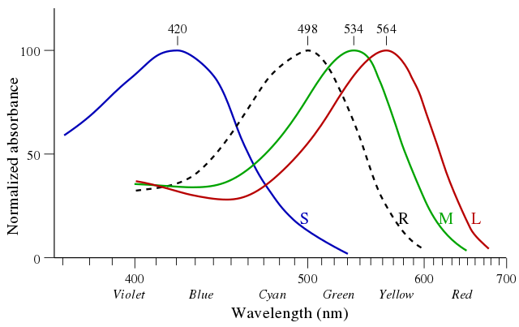
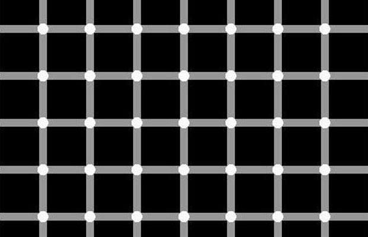
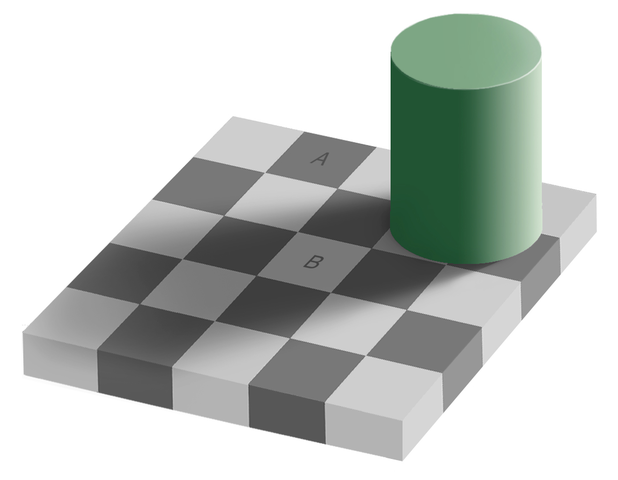

Vision
Evolution has produced a large variety of light sensors among living organisms. From the simplest, where sensitive cells are directly on the skin surface, to more complex ones where the light sensing cells are embedded into a camera obscura like organ.

{kind=link}
Eye, can be compounded, like insect vision, or non-compound (simple eyes) when a single lens-system focus lignt on all the sensible cells.

The figure above, illustrate how to reconstruct the 3D shape of an ant eye (a polymer mold is taken from the ant and acquired using a brightfield microscope), several Z focus position are used, by analysing the position of in focus point of the image, a 3D representation can be build (see below).

In fact, evolution has followed two different path to add vision capabilities, for example our mammalian eye has a blind spot due to the reversed optical nerve implantation. Vertebrates and octopuses developed the camera eye independently. In the vertebrate version (left figure) the nerve fibers pass in front of the retina, and there is a blind spot where the nerves pass through the retina. In the vertebrate example, 4 represents the blind spot, which is notably absent from the octopus eye (right figure). In vertebrates, 1 represents the retina and 2 is the nerve fibers, including the optic nerve (3), whereas in the octopus eye, 1 and 2 represent the nerve fibers and retina respectively.[evolution of the eye - wikipedia]

{kind=link}
Human vision
Human vision rely on two principal organs: the eyes, and the brain.

{kind=link}
Sensitivity
Eye sensitivity is due to two types of cells: rods and cones. Rods cells are higly sensitive to brightness, there spectrum sensitivity is roughly situated in the green part of the visible spectrum (see below). Rods are spread all over the retina excepted in the fovea and of course in the blind spot.
Cones are cell responsible for the color discrimination, the highest cones concentration is located inside the fovea (see figure).
The ~100 million rods cover the entire retina, while the ~10 million cones cover only the 5° solid angle viewed by the fovea (in fact most of them are inside the 1° angle).
Actually, the eye do not gives a full resolution image on the complete field of view at ones, to have a complete picture (litteraly), the brain has to merge image information taken by the most spatially resolved part of the eye, the fovea, while the eye is scanning the scene.

While rods cells can be grouped in bundle to the optical nerve, meaning that the spatial localisation of the information is lower than the one given by cones having there own nervous termination.
The eye has also a system for light limitation, the iris. Similarilly to the camera, the iris role is to modulate the quantity of light entering the eye, to increase its dynamic range (from very low light to complete sun exposed scene). Iris diameter is modulated from 2 to 8 mm giving a global dynamic up to $10^{10}$.
But the retina itself has a limited dynamic range, i.e. the total intensity variation that it is capable of discriminate. The actual retina dynamic range is less than 200, this explains some technological choices that have been made for image storage (see in next chapters).

The illustration above, shows the same image with a dynamic of 256 levels (left) and only 32 levels (right). With only 32 levels, one can see false contours appearing in large continuous regions (e.g. the sky). But for the eft image, it is almost impossible to discriminate very close graylevels from each other.
However thanks to the agile displacement ot the eye and the reconstruction of the brain, we are able to look at scenes with a very high dynamic range as illustrated below (with much more than 255 levels!).

.jpg){kind=link}
The anatomy of the retina is composed of several layers, it is interesting to note that a typical nervous signal speed is ~100 m/s, and its commutation time is about 25 Hz. We can therefore be estonished by how fast our vision is able to process some information. In fact, the natural vision processing power is hidden in the high parallelism achieved by the complete chain of 100.000.000.000 interconnected neurons!

The light acquisition is done by the eyes only, but the processing is shared by both organs.
Indeed some low-level image processing is done at the retina level, for example the first stage od direction selectivity is accomplished in the inner layer of the retina see lee2006.
The phenomenon of lateral inhibition occurs when a stimulus is applied to neighboor neurons. Each neuron will negatively influence its neighboors (relatively to its own signal intensity). The resulting pattern has a hight contrast.

Color perception
Color perception is enabled by the presence of 3 types of cones in the retina. The sensitivity spectrum of these cones is spread over the visible spectrum as illustrated below.

{kind=link}
Our spectrum of acquisition is limited on one hand at the ultraviolet light, and on the other by the near infrared light. We will see that image analysis is not limited to this range, depending of the image sensor used.
Other species developped a vision in a shifted spectrum (e.g. bees can see some UV).

{kind=link}
Persistence
Because of the, so to speak, slow speed of firing of the chemico-physical processes involved in the vision, a fast change in light intensity may be impossible to be detected. This is why, as illustrated above, a fast fast rotating stripe of leds can give the illusion of being a 2D disk (rem. actually the video present already a remanent object, due to the camera limited acquisition speed and frame integration time...).
Vision limitations and optical illusions
Here are some classical optical illusions that can trick your eye, maybe machine vision can be used here to avoid some troubles...



By Original by Edward H. Adelson, this file by Gustavb [Copyrighted free use], via Wikimedia Commons

TotoBaggins at the English language Wikipedia GFDL or CC-BY-SA-3.0, via Wikimedia Commons

By AnonMoos [Public domain], via Wikimedia Commons